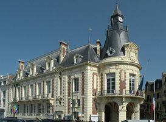
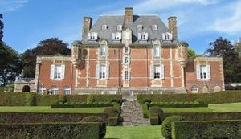
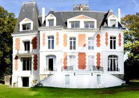
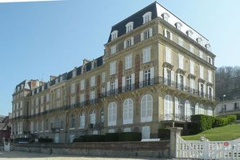
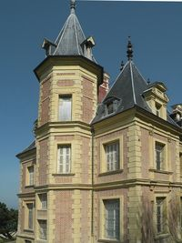
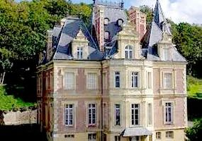

Recensement Jean-Claude Truffet
| Département | 14 — Calvados |
| Canton | Honfleur-Deauville |
| Commune | Trouville sur Mer-Deauville |
| Type d'édifice | Château |
| Période d'origine | XVI |
| Coordonnées GPS | 49° 21" 50" Nord, 0° 06' 13" Est Bonneville GPS : 49° 20' 15" Nord, 0° 07' 03" Est Fougères GPS : 48° 21' 13" Nord 1° 12' 34" Ouest |






trois châteaux dans cet article Aguesseau, Bonneville, Fougère et les Roches noires BONNEVILLES SUR TOUQUES, appelé aussi le château de Guillaume le Conquérant date du XIe siècle. Le château a été classé aux M.H. depuis le 16/11/1964. FOUGERES, c'est un château agé de plus de 1000 ans. La construction date du XIIe siècle. Il appartenait à Raou II. Les ROCHES NOIRES, hôtel, Il appartenait à Alphonse-Nicolas Crépinet. Il est de style Second Empire. Le hall d'entrée fut décoré par Robert Mallet-Stevens. L'hôtel fut peint par le Peintre Claude Monet, en 1870. est le second grand hôtel de luxe construit par l'architecte Alphonse-Nicolas Crépinet, devint le lieu de villégiature de Marcel Proust puis de Marguerite Duras. De grands bourgeois et aristocrates français côtoyaient alors, sur la côte normande, des milliardaires américains, des aristocrates russes, des industriels allemands ou des financiers anglais. Rénové en 1924 et transformé, par l'architecte Robert Mallet-Stevens, Durant la Seconde Guerre mondiale, il est réquisitionné, en 1939, par les forces armées françaises, comme hôpital complémentaire, puis il fut occupé par l'Armée allemande. Le Palace cessa son activité hôtelière en 1959 et fut mis en vente, sous forme d'appartements privés.
AGUESSEAU, en 1599, Hélie de Nollent est désigné comme seigneur de la paroisse de Saint-Jean de Trouville. Son fils Robert de Nollent fait bâtir au milieu du XVIIe siècle, un château au sommet d'une colline dominant la vallée du ruisseau de Callanville. Transmis par héritage, le domaine échoit, en 1729, à Henri-François d'Aguesseau, fils aîné du Chancelier de France. A son décès, faute d'héritiers directs, la propriété est divisée puis vendue à maints propriétaires. Au milieu du siècle la demeure est occupée par la famille du ministre Guizot elle est appelée parfois villa Guizot. aujourd'hui propriété de la baronne Léonce de Curières de Castelneau. Ce bel édifice en briques et en pierres, bâti dans le style Louis XIII, comprend un rez-de-chaussée et un étage surmonté d'un toit d'ardoises très élevé et du plus grand effet, aux angles sont quatre tourelles en poivrière. Les deux façades du nord et du sud sont très sobres d'ouvertures, deux ailes de construction plus moderne, formant terrasses, se trouvent aux extrémités. Sous le second Empire, le Prince Murat acquiert le château qu'il transforme en y accolant deux ailes basses en terrasse et en construisant de superbes écuries. A cette époque. En 1940, le château est occupé par les troupes allemandes qui mettent à mal la propriété. Le château est pillé, le plan d'eau comblé, la terrasse et le jardin détruits. Le château est vendu en 1949 et les propriétaires s'efforcent de lui redonner son lustre d'antan. Sur les hauteurs à l'Est de Trouville. La grille d'entrée est gardée d'un élégant pavillon du XIXe siècle en pierres calcaires et briques blanches et rouges.
Roches; Alphonse-Nicolas Crépinet. Marcel Proust, Marguerite Duras, Henri-François d'Aguesseau
"
trois châteaux dans cet article Aguesseau grav-2, Bonneville-Touques , Fougères grav 3 , Montebello grav-5-6 Arguesseau GPS : 49° 21" 50" Nord, 0° 06' 13" Est Bonneville GPS : 49° 20' 15" Nord, 0° 07' 03" Est Fougères GPS : 48° 21' 13" Nord 1° 12' 34" Ouest
Hôtel GPS : 49° 22' 20" Nord, 0° 05' 02" Est Trouville mairie grav-1